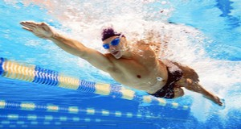
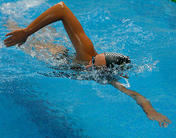
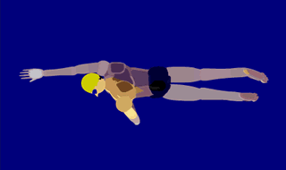
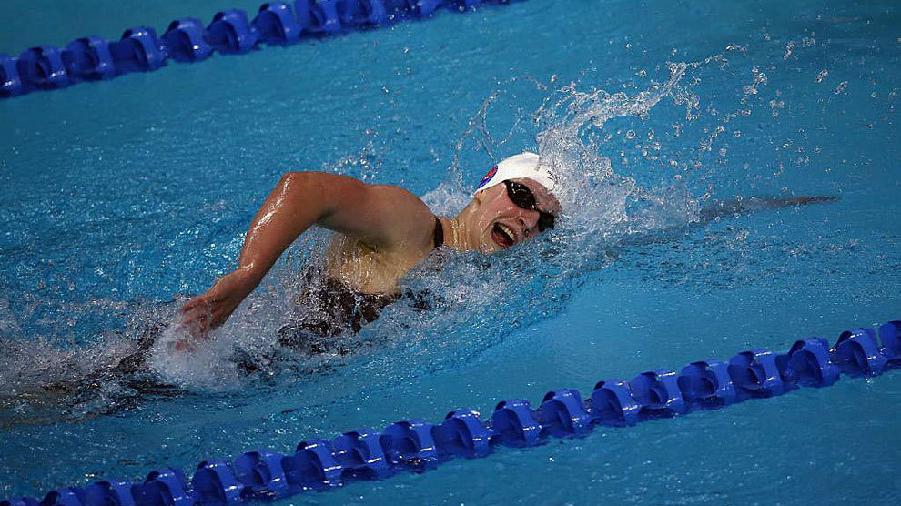

El crol es un estilo de natación que consiste en que uno de los brazos del nadador se mueve en el aire con la palma hacia abajo dispuesta a ingresar al agua, y el codo relajado, mientras el otro brazo avanza bajo el agua. Las piernas se mueven de acuerdo a lo que en los últimos años ha evolucionado como patada oscilante, un movimiento alternativo de las caderas arriba y abajo con las piernas relajadas, los pies hacia adentro y los dedos en punta. Por cada ciclo completo de brazos tienen lugar de dos a ocho patadas oscilantes.
La máxima velocidad de nado que se ha conseguido en el crol hasta el momento ha sido de unos 2.39 metros por segundo (unos 8.6 km por hora). Mientras la mariposa tiene una velocidad punta más alta en una parte de su ciclo debido a la doble tracción de los brazos, la velocidad media es ligeramente menor. Las distancias en el estilo crol son 50 m, 100 m, 200 m, 400 m, 800 m, 1500 m y 3000 m, siendo la prueba más extensa en este estilo crol o libre.
La posición del pecho permite mayor flexibilidad del brazo en el agua en comparación con la braza, y la recuperación de los brazos por encima del agua reduce el arrastre, en comparación con la recuperación acuática de la braza.
   
|